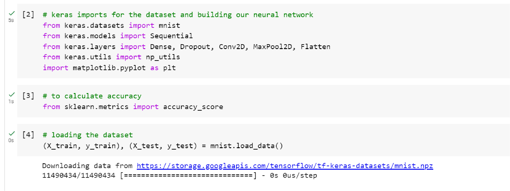
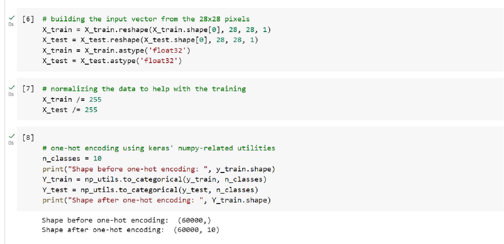
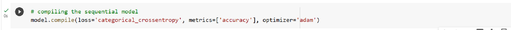

Introduction
Using CNNs to Classify Hand-written Digits on MNIST Dataset
MNIST (Modified National Institute of Standards and Technology) is a well-known dataset used in Computer Vision that was built by Yann Le Cun et al. It is composed of images that are handwritten digits (0-9), split into a training set of 50,000 images and a test set of 10,000, where each image is 28 x 28 pixels in width and height.
This dataset is often used for practicing any algorithm made for image classification, as the dataset is fairly easy to conquer.
Result and Discussion
The code block imports the required modules and packages for working with the MNIST dataset and building a neural network model using Keras. By importing these modules and packages, we have access to the necessary tools for working with the MNIST dataset and building a neural network model using Keras.

This code block generates a 5x5 grid of subplots using matplotlib's subplots() function. It then displays a selection of grayscale images from the X_train dataset, which contains the training images from the MNIST dataset. The imshow() function is used to display each image on its corresponding subplot, and set_axis_off() is used to remove axis labels and ticks from the subplots. Finally, the plt.show() function displays the grid of subplots with the images. Overall, this code provides a visual representation of a subset of the MNIST dataset.
The given code prepares image data for classification using convolutional neural networks (CNNs).
- Reshaping the data: The input images, represented as a 28x28 pixel matrix, are reshaped into a 4D tensor format with dimensions (number of samples, 28, 28, 1). This is necessary to match the input requirements of CNN models.
- Data normalization: The pixel values of the images are normalized by dividing them by 255. This rescales the values to a range between 0 and 1, which helps in improving the training process.
- One-hot encoding: The target variable, y_train and y_test, representing class labels, is converted into a binary matrix using one-hot encoding. This is achieved using the np_utils.to_categorical() function from the Keras library. The number of classes is set to 10, indicating the total number of possible classes.
The code then prints the shape of the target variable before and after one-hot encoding, providing a glimpse into the data structure. These preprocessing steps are essential for effectively training a CNN model for image classification tasks.
The code defines a sequential model for image classification using a Convolutional Neural Network (CNN)
- Sequential model creation: The model is initialized as a sequential object, indicating a linear stack of layers.
- Convolutional layer: A 2D convolutional layer is added to the model. It applies 25 filters of size (3,3) with a rectified linear unit (ReLU) activation function. The input shape is (28,28,1), representing a grayscale image.
- Max pooling layer: A max pooling layer follows the convolutional layer to downsample the spatial dimensions.
- Flattening layer: The output of the max pooling layer is flattened into a 1D vector to prepare it for the dense layers.
- Hidden layer: A dense layer with 100 units and ReLU activation is added. It captures higher-level features in the data.
- Output layer: The final dense layer has 10 units with a softmax activation function. It produces the predicted probabilities for each class.
This code sets up a CNN model with convolutional, pooling, flattening, and dense layers, suitable for image classification tasks.
The code snippet compiles a sequential model for training and evaluation.
- Compilation: The model is configured using model.compile(). This step prepares the model for training by specifying the loss function, metrics, and optimizer.
- Loss function: The 'categorical_crossentropy' loss function is chosen. It measures the dissimilarity between the predicted and true labels, specifically for multiclass classification problems.
- Metrics: The 'accuracy' metric is defined to evaluate the model's performance. It calculates the proportion of correctly predicted instances during training and evaluation.
- Optimizer: The 'adam' optimizer is selected. It adjusts the model's weights based on the gradients of the loss function, efficiently optimizing the model's performance.
By compiling the model with these settings, it is ready to be trained on the provided data, enabling it to learn and improve its predictions.
The code trains the compiled sequential model for 10 epochs using the fit() function. The specified parameters include the training data (X_train and Y_train), batch size (128), number of epochs (10), and validation data (X_test and Y_test). During training, the model learns to make predictions based on the input data and adjusts its internal weights to minimize the defined loss function.
After training, the model is used to make predictions on the training data using the predict() function. The predictions are obtained as probabilities for each class. The np.argmax() function is then applied to each prediction to identify the digit with the highest probability, representing the predicted digit for each input. Finally, the predicted digits are printed using the print() function to display the model's predictions on the training data.
Scenarios where neural network can be applied and where our implementation could be useful:
- Optical character recognition (OCR) - CNNs can be used to recognize handwritten characters in scanned documents and images, allowing for the conversion of handwritten text to digital text.
- Automated check processing - Banks and financial institutions can use CNNs to recognize handwritten digits on checks, allowing for faster and more accurate processing of checks.
- Medical image analysis - CNNs can be used to recognize hand-written numbers on medical images, such as X-rays, MRIs, and CT scans, which can help in identifying specific regions or areas of interest in the images.